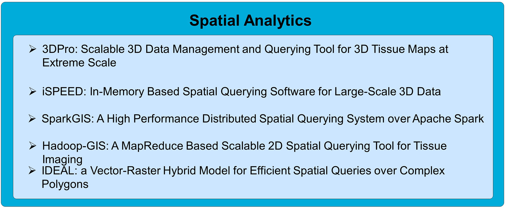
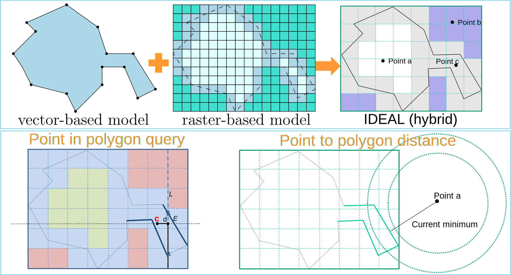

High resolution, high throughput tissue imaging technologies are producing unprecedented amount
of information at cellular and subcellular level from human tissues. The explosion of 2D and 3D spatial
objects such as nuclei, cells and vessels pose significant challenges for spatial data management and queries.
We have developed various big data driven systems to support scalable, efficient spatial data management and analytics methods
for tissue imaging.

High resolution, high throughput imaging technologies are producing unprecedented amount of information at cellular and subcellular level from human tissues. The explosion of 3D spatial objects such as nuclei, cells and vessels pose significant challenges for spatial data management and queries: 1) Explosion of data: a single tissue may contain millions of cells, and a tissue volume may contain tens of millions of 3D objects, with an estimated 37 trillion cells per human body. High throughput is demanded for processing such amounts of data; 2) Data often come from multi-modalities representing different types of knowledge, where image registration and data integration is needed; and 3) The data are represented in complex geometric shapes such as 3D meshes, which are highly computational intensive, in particular, for complex objects such as vessels.
We developed 3DPro, an efficient and scalable 3D data management and querying system for 3D objects. 3DPro represents 3D objects with multi-levels of details (LODs) with progressive compression, with progressive LOD query conditions. A skeleton based approach is used to preserve the structure for partitioning complex structures such as vessels, which guides the creation of multiple minimal bounding boxes for fine grained approximation of the shape. This significantly reduces distance based computations. 3DPro uses a novel Filter-Progressive-Refine paradigm to minimize geometric computation, which can provide early returns of accurate results from lower resolution whenever possible. If a result could not be determined from a LOD, the query will further proceed to the next level of LOD with higher resolution. A memory centered approach is used for data management and querying processing to mitigate I/O cost. Meanwhile, 3DPro is designed for parallelization, supporting both GPU based parallelism and CPU level parallelism.
Source code:
https://github.com/tengdj/3DPro
The goal of the project iSPEED is to create effective and scalable in-memory 3D spatial data processing methods with 3D data compression, 3D indexing methods, and partitioning level parallelism for multiple big data platforms including Hadoop and Spark, to support fast discovery of spatial patterns of 3D pathology objects. To achieve low latency, iSPEED stores data in memory with effective progressive compression for each individual 3D object with successive levels of detail, and provides global spatial indexing in memory through effective partitioning. An in-memory 3D spatial query engine will be invoked on-demand to run many instances in parallel. The query parallelization is implemented with, but not limited to, MapReduce and Spark. At run time, iSPEED will dynamically decompress required 3D objects only at the specified LOD, and create necessary spatial indexes in-memory to accelerate query processing, including object-level indexing (inter-objects) and structural indexing (intra-object) on complex structured objects. iSPEED significantly improves 3D spatial query performance compared to traditional Hadoop based approach.
Source code:
https://github.com/StonyBrookDB/iSPEED
Documentation:
http://bmidb.cs.stonybrook.edu/ispeed/index
SparkGIS is a spatial data querying system for high throughput and low latency spatial query processing built on Apache Spark. SparkGIS takes advantage of the in-memory processing capabilities of Spark by adapting the core querying methods of Hadoop-GIS to Spark. One research goal for SparkGIS is to solve the problem of memory constraint as performance will drop significantly when data does not fit into memory. SparkGIS takes a spatial query rewriting approach to break a big query into small ones that can can fit into memory and be pipelined combining compressed binary data storage in-memory. SparkGIS supports common spatial queries including range, spatial join and k-nearest neighbor search and can be extended to other complex query pipelines. On-demand in-memory indexes allow SparkGIS to prune input data and apply compute intensive operations on only a subset of relevant spatial objects and consequently achieve higher performance. SparkGIS employs a layered architecture that enables system extensibility for seamless integration of auxiliary distributed computation.
Source code:
https://github.com/StonyBrookDB/sparkgis
Documentation:
http://bmidb.cs.stonybrook.edu/sparkgis/index
Hadoop-GIS is a scalable and high performance spatial data warehousing system for running large scale spatial queries on Hadoop. Hadoop-GIS supports multiple types of spatial queries on MapReduce through spatial partitioning, customizable spatial query engine RESQUE, implicit parallel spatial query execution on MapReduce, and effective methods for amending query results through handling boundary objects. Hadoop-GIS utilizes global partition indexing and customizable on demand local spatial indexing to achieve efficient query processing.
Source code:
https://github.com/StonyBrookDB/hadoopgis/
Documentation:
Documentation::http://bmidb.cs.stonybrook.edu/hadoopgis/index
IDEAL is a vector-raster hybrid approach through information-preserving rasterization. The rasterization not only converts a polygon to a grid of pixels, but also maintains information between rasterized pixels (raster) and the polygon (vector) on spatial relationship (interior, boundary or exterior), intersected edges, and vertices of the intersected edges at the pixel level. Indeed, the raster model not only works as a grid index but also provides sufficient knowledge for conducting geometric computations over only part of the polygon primitives. By building spatial querying methods with such a hybrid approach, the query performance and throughput can be significantly improved.
Source code:
https://github.com/tengdj/IDEAL
